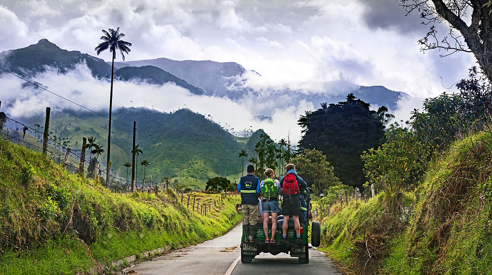
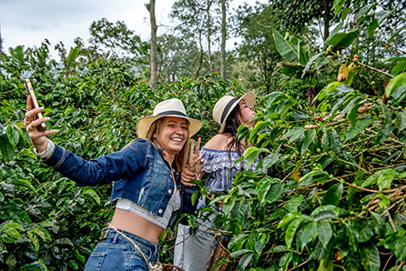
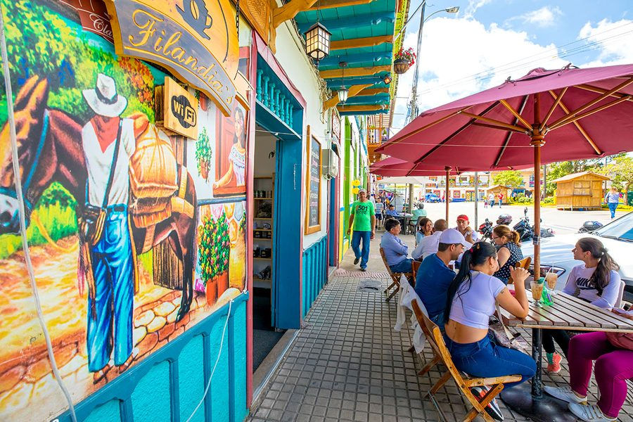

Dag 4–6 · Koffiestreek · Valle de Cocora · Waspalmen
Een lange maar prachtige rit door de Andes naar de koffiestreek. Ticket boeken via Bolivariano (bolivariano.com.co). In Armenia overstap naar lokale bus richting Salento — geen reservering nodig, gewoon instappen.
Boeken: bolivariano.com.co — ticket online boeken voor Bogotá → Armenia. In Armenia ter plaatse bus pakken naar Salento (goedkoop, geen boeking nodig).
Lunchpakket: De avond voor dag 4 vragen aan het hotel om een lunchpakket klaar te maken. Er zijn weinig stops onderweg.
Taxi naar station: Vanuit Masaya Bogotá duurt het ±30 min met taxi. Uber om 6u30 bestellen.

's Ochtends staan er jeeps te wachten op het centrale plein. €2 p.p. voor de rit naar het begin van de wandeling. Regelen kan ook via het hotel.
Een van de mooiste wandelingen van Colombia: door een mistige jungleloop langs beken, hängebrug en uiteindelijk naar de open vallei met de imposante waspalmen — de nationale boom van Colombia en de hoogste palmbomen ter wereld (tot 60m).
BELANGRIJK: Wanneer je uit de jeep stapt, moet je NIET de hoofdweg naar de palmbomen volgen, maar RECHTS het veld inwandelen. Daar begint de hike door de jungle. Vraag dit na in het hotel — zij geven normaal een plannetje.
Route: Jungle loop → beken oversteken → hängebrug → kolibrie-tuin → dan uitkomen bij de waspalmen in de open vallei. Terug langs de hoofdweg.
Meenemen: Voldoende water (minstens 1,5L p.p.), snacks, regenjas (misty jungle!), goede wandelschoenen. Zonnecrème voor het open deel bij de palmbomen.
Terug: Wacht aan het beginpunt van de jeeps. Kan zijn dat je even wacht tot de jeep vol is.

Een rondleiding op een werkende koffie-finca. Ontdek het volledige proces van koffieboon tot kopje: plukken, fermentatie, drogen, roosteren. Inclusief koffieproeverij. Een must in de koffiestreek!

Wandel door het kleurrijke dorpje Salento en klim naar de Mirador (Alto de la Cruz) voor een panoramisch uitzicht over de groene heuvels van de koffiestreek. Perfecte plek voor de zonsondergang.
📖 Lees meer: 🌅 Mirador →